Guia prático para a equipa: como a app funciona no restaurante
1. O que é a app
A Chef Domingos é a app de fidelização dos restaurantes Portuguese Lab e Pizza Lab. O cliente acumula pontos quando paga e troca-os por vales em dinheiro ou promoções.
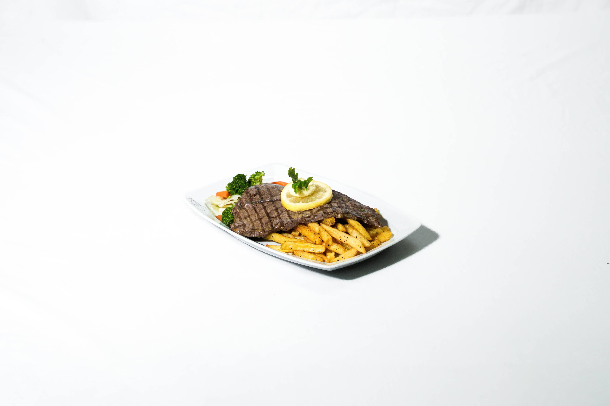
Portuguese Lab
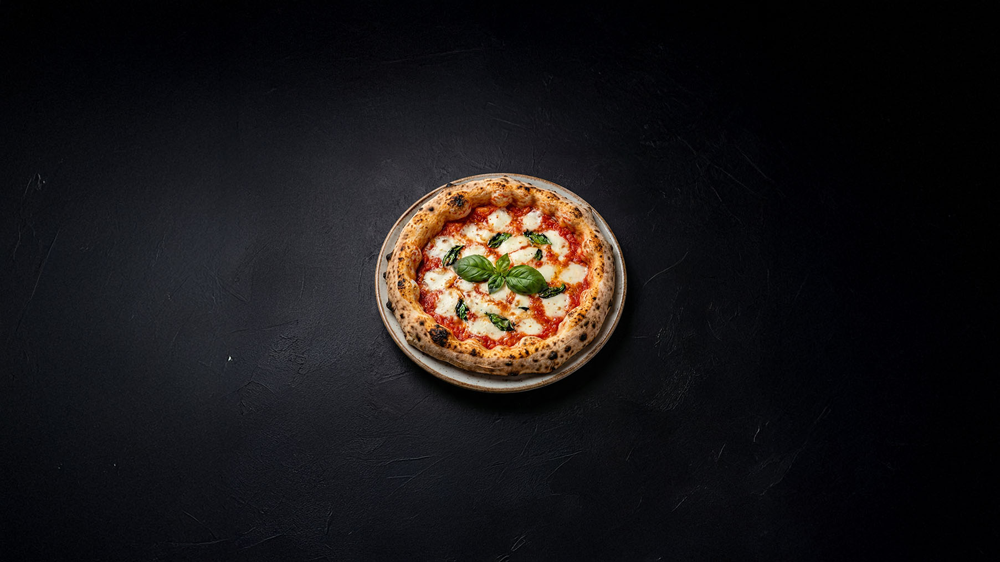
Pizza Lab
A app não substitui a caixa (WinRest). Serve para o cartão do cliente, o QR e os vales. O desconto no talão continua a ser aplicado por vocês na caixa, quando o vale for válido.
2. Como funcionam os pontos
Regra
Valor
Ganhar pontos
1 € gasto = 10 pontos
Vale 5 €
500 pontos
Vale 10 €
900 pontos
Vale 20 €
1 700 pontos
Vale 30 €
2 500 pontos
Quando o cliente resgata um vale, esses pontos saem do saldo.
Só pode haver um vale em dinheiro por usar de cada vez.
Depois de resgatar um vale em dinheiro, espera 24 horas para resgatar outro.
Contas novas: o cartão / QR em Ganhar fica totalmente ativo cerca de 12 horas após o registo.
3. O que o cliente faz no telemóvel
Criar conta ou entrar
Descarrega a app Chef Domingos (App Store ou Google Play).
Passa o ecrã de boas-vindas (ou toca em Saltar).
Toca em Entrar com email.
Ou, se ainda não tiver conta: Registe-se (nome, email, palavra-passe e aceitar os termos).
Expliquem ao cliente que, nas primeiras ~12 horas, o QR em Ganhar pode ainda não funcionar na caixa. Vale a pena voltar na visita seguinte.
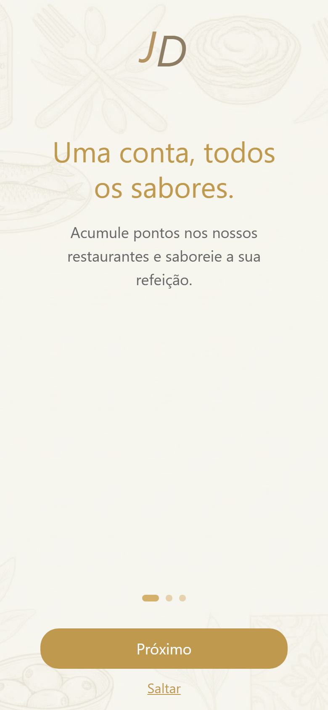
Boas-vindas (Saltar ou Próximo)
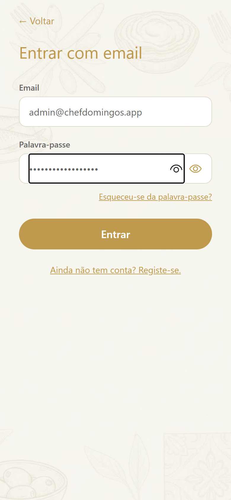
Entrar com email
Os 5 botões de baixo
Separador
Para que serve
Início
Saldo de pontos, promoções e atalho para o menu de cada restaurante.
Carteira
Histórico: pontos ganhos e gastos.
Ganhar (círculo dourado)
QR do cartão: é este que se mostra na caixa para acumular pontos.
Recompensas
Trocar pontos por vales 5 / 10 / 20 / 30 € e ver “Os meus vouchers”.
Conta
Perfil, idioma, termos e (nas contas de gestão) a Área Admin.
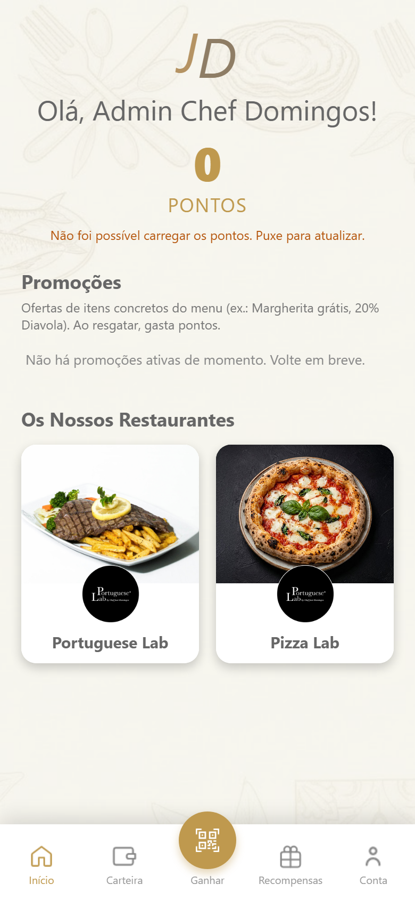
Início: saldo, promoções e restaurantes
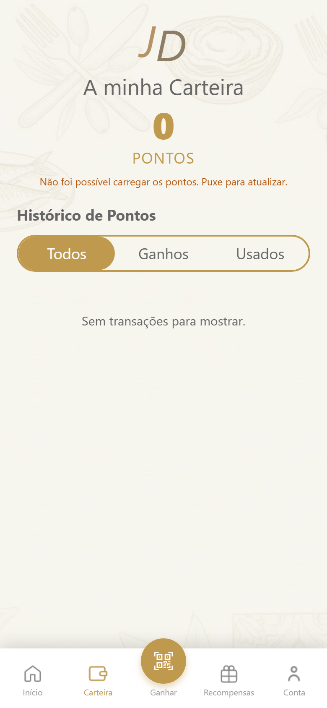
Carteira: histórico de pontos
Ganhar pontos (visita ao restaurante)
O cliente pede e paga normalmente na caixa.
Abre a app → Ganhar.
Mostra o QR grande (o ecrã não se desliga sozinho).
A caixa lê o cartão / QR. Os pontos entram com a conta (1 € = 10 pts).
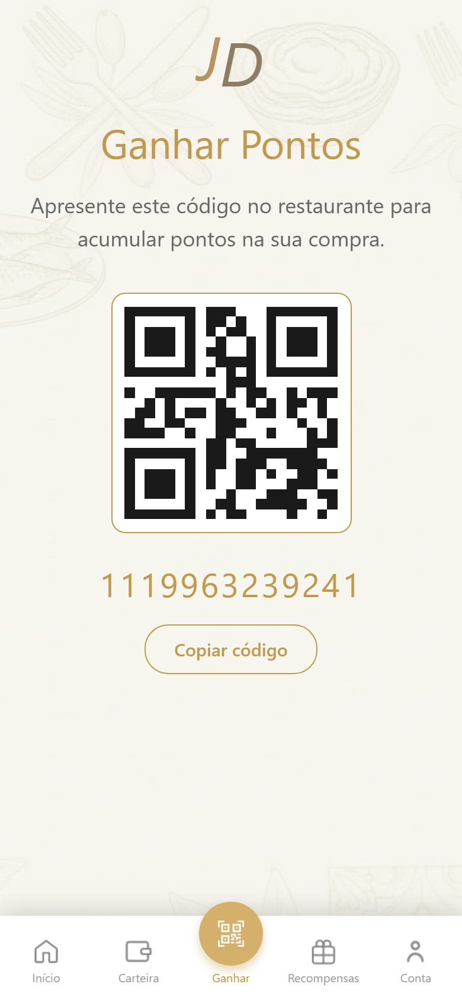
Ganhar: QR para a caixa
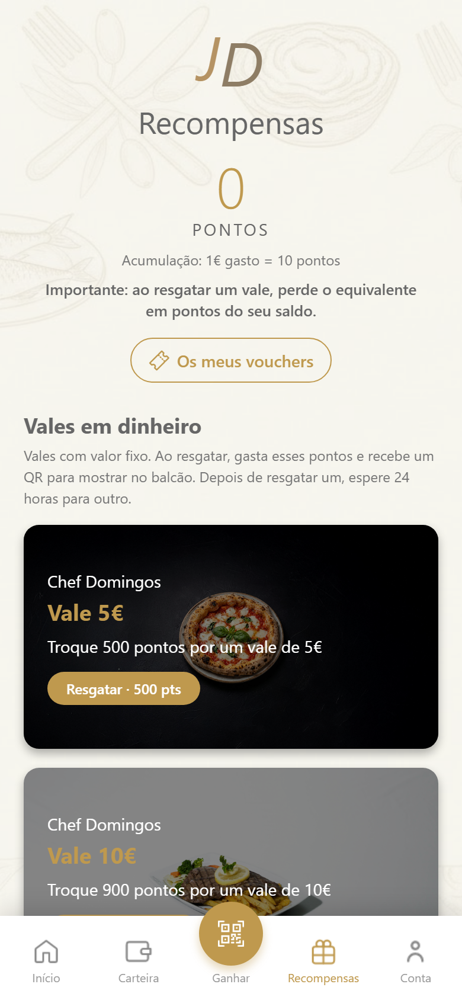
Recompensas: vales 5 / 10 / 20 / 30 €
Usar um vale
Em Recompensas, o cliente escolhe o vale (se tiver pontos) e confirma. Os pontos saem logo.
Abre Os meus vouchers e mostra o QR do vale (não o de Ganhar).
A equipa valida na Área Admin e aplica o valor na caixa.
São dois QR diferentes: Ganhar = cartão para somar pontos. Os meus vouchers = vale para descontar na conta.
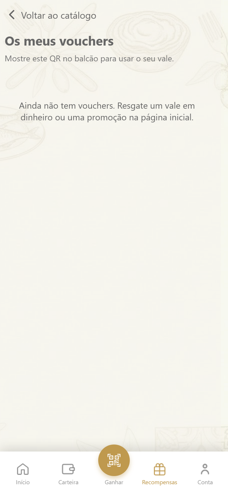
Os meus vouchers: QR do vale
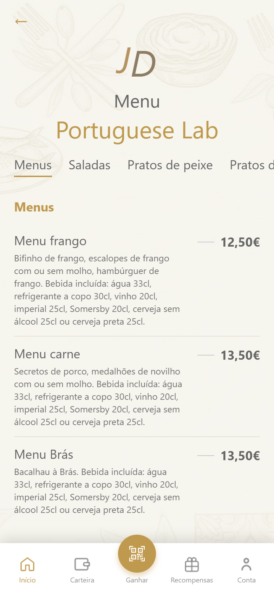
Menu do restaurante (no Início)
4. O que a equipa faz na caixa
No dia a dia só precisam disto:
A. Cliente quer ganhar pontos
Peçam: “Abra a app → Ganhar e mostre o QR.”
Leiam esse QR / cartão como no fluxo de fidelização da caixa.
Os pontos entram sozinhos com o valor da conta.
Se a fatura for anulada no WinRest, o sistema de fidelização já retira os pontos. Não é preciso anular à mão.
B. Cliente quer usar um vale
Peçam o QR em Recompensas → Os meus vouchers (não o de Ganhar).
Na app da equipa: Conta → Área Admin → Validar voucher.
Leiam o QR (ou escrevam o código em Manual).
Se estiver Válido, a app diz o que aplicar (ex.: 5 €, 10 €, ou o item da promoção).
Aplicam exactamente esse valor / item na caixa.
A app marca o vale como usado. Se aparecer “já utilizado” ou “expirou”, não aplicam desconto.
5. Área Admin (gestão)
Aparece em Conta só nas contas de administrador. O cliente normal não vê este botão.
Acesso da equipa
Email: admin@chefdomingos.app
A palavra-passe não vai neste guia. Pedir à Witflow / Grupo PIE.
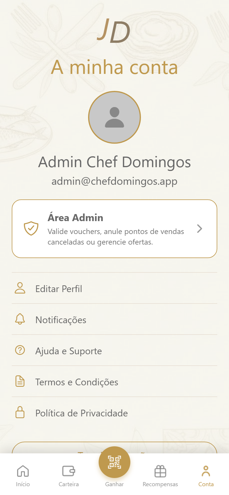
Conta: botão Área Admin
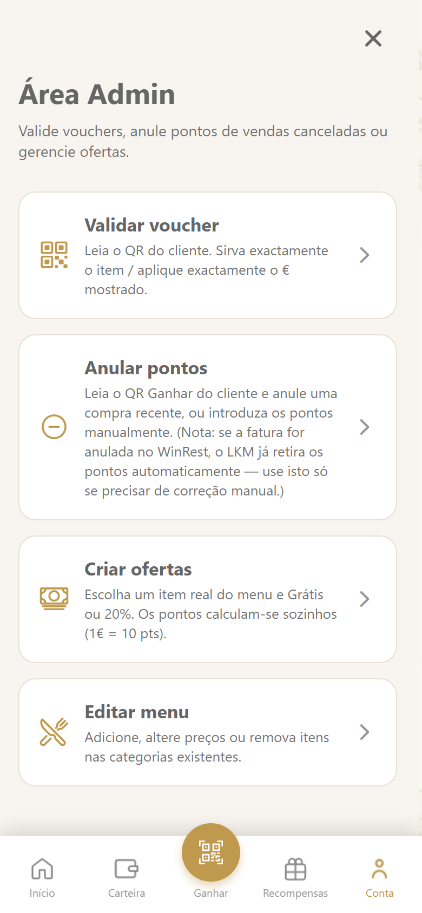
Área Admin: as 4 ferramentas
Validar voucher
Abrir Validar voucher.
Permitir a câmara, se pedir.
Modo Scanner (ou Manual se o QR não ler).
Verde = válido. Vermelho = já usado. Amarelo = expirado / ainda não ativo.
Tocar em Validar outro para o cliente seguinte.
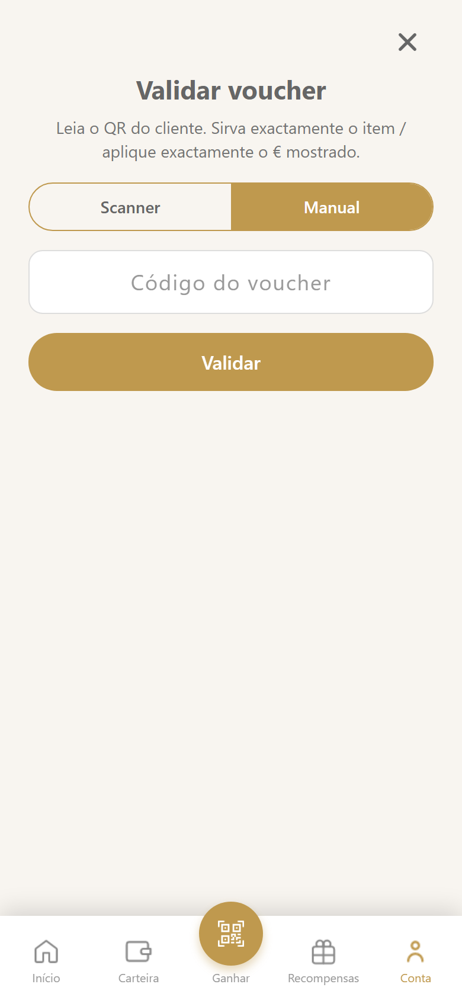
Validar voucher: Scanner ou Manual
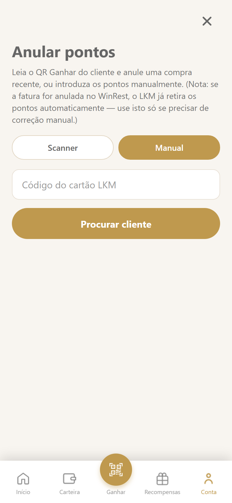
Anular pontos: só correção manual
Anular pontos
Só se precisarem de uma correção manual (ex.: engano). Se a venda foi anulada no WinRest, os pontos já saem sozinhos.
Ler o QR Ganhar do cliente, ou escrever o código do cartão em Manual.
Tocar numa compra recente para a anular, ou indicar os pontos à mão e o motivo.
Criar ofertas (promoções do menu)
Criar ofertas → escolher restaurante (Portuguese Lab ou Pizza Lab).
Tipo: Item grátis ou 20% de desconto.
Escolher o item real do menu. Os pontos calculam-se sozinhos (preço × 10, ou 20% disso).
Título, descrição, dias de validade → Criar oferta.
A promoção aparece no Início do cliente. Ao resgatar, gasta pontos e gera um QR para validar na caixa.
Os vales em dinheiro (5 / 10 / 20 / 30 €) já existem; não é preciso criá-los. Podem desativar uma promoção nas ofertas existentes.
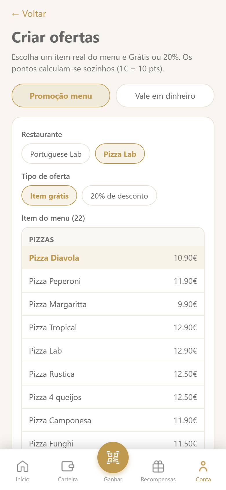
Criar ofertas: item do menu
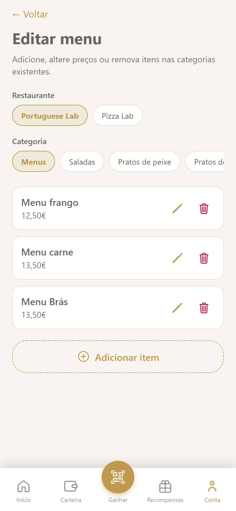
Editar menu: nomes e preços
Editar menu
Editar menu → restaurante e categoria.
Alterar nome ou preço, adicionar item, ou remover (podem voltar a pô-lo depois).
O menu que o cliente vê na app vem daqui. Complementos e bebidas não entram no seletor de promoções.
6. Dúvidas frequentes
O QR de Ganhar não funciona. Confirmar se a conta tem mais de ~12 horas. Pedir para sair e voltar a entrar. Se continuar, contactar o suporte.
O cliente mostra o QR e não aconteceu nada. Confirmar que é o de Ganhar (acumular) e não o de um vale.
O vale não desconta sozinho na caixa. É normal: a app valida; a equipa aplica o valor no WinRest.
Anulei a fatura. Preciso de ir à Área Admin? Não. A anulação no WinRest já tira os pontos.
O cliente não tem telemóvel. Sem app não há cartão digital nesta versão. Não inventar pontos à mão sem o cartão.
Idioma. Em Conta → Editar perfil o cliente escolhe Português ou English.
Apagar conta. O cliente pode eliminar a conta em Conta. Isso apaga o perfil de fidelização na app.
Contacto
Questões de caixa ou contas de gestão: a vossa equipa Witflow / Grupo PIE.
Email geral: grupopie@grupopie.com